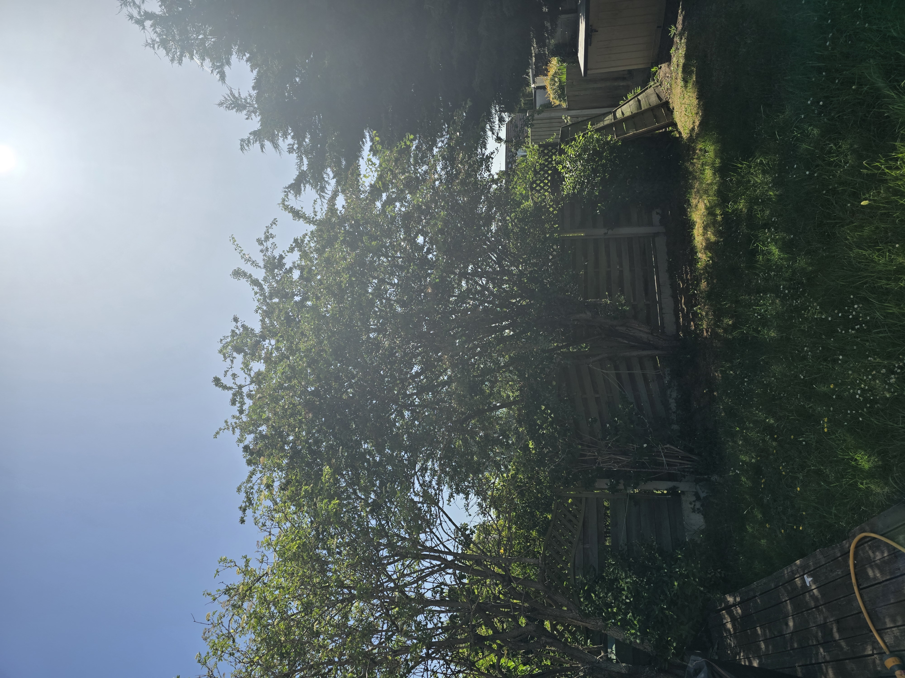

May 2026 - Elder tree to the left, firs to the right. Please could you also prune the middle tree? Thanks, Anish
Steve @ Crown Tree Services,

May 2026 - Elder tree to the left, firs to the right. Please could you also prune the middle tree? Thanks, Anish